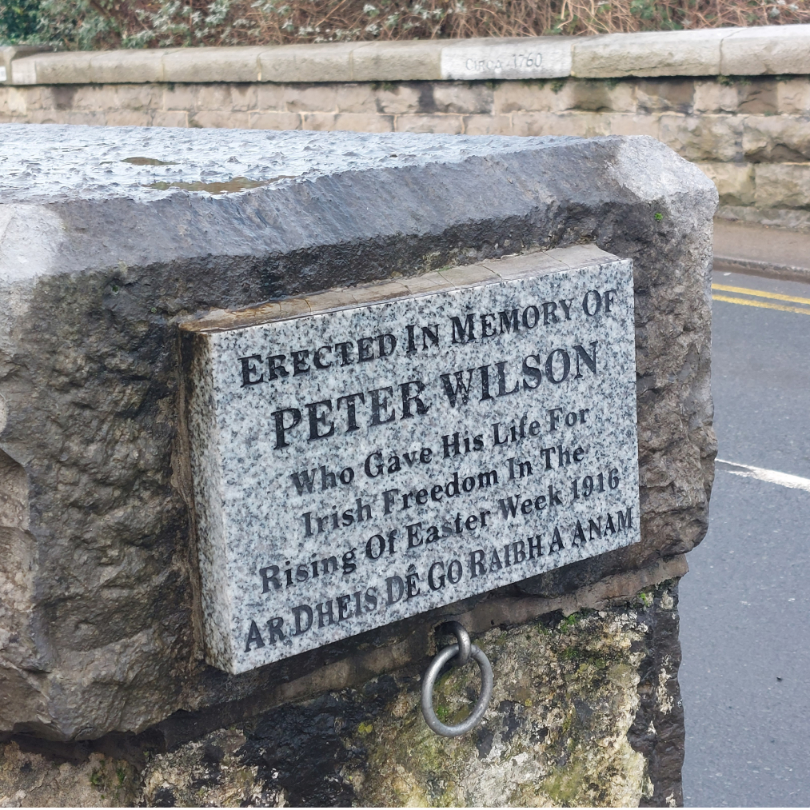

Review
“I was surprized to see this in swords as I didnt know that the town had any cunnection to the Easter rising but it is good to see that they are still being honnored after so long”
“I was surprized to see this in swords as I didnt know that the town had any cunnection to the Easter rising but it is good to see that they are still being honnored after so long”
This place was placed in honner of Irish volonter Peter Wilson who died during the Easter rising of 1916 as did many others whos also fought for the freedome of the Irish people. While the memorial was placed in his home town of Swords due to the fighting he ended up dying and being buaried in Dr Steevens Hospital at Phoenix Park.
(image sourced from findagrave)
Peter Wilson was at the time 40 years old and native of the town of Swords and was a proud member ot the Irish Volunteers during Easter Monday, 1916 he was sent from one place to another first to going to Finglas. He then recived orders from hsi supiers from Dublin asking for aid and reinforcements and so was sent along with 20 other men to help in the defence of the G.P.O. building. Some time in the fighting he was sent to the the Quays where was killed near the Mendicity Institute.
By the time the easter rising was over many people had lost there lives leaving many widows and orphens many of those that died would become marters and some would say that there wiilingsose to fight helped make Ireland the indapendent country that it is today one of those men being one Peter Wilson

(image sourced from findagrave)
(image sourced from 1916garrison)
Other then Peter Wilson the was also the Swords Company which made up the 5th Battalion of the irish volunteers also called the Fingal Brigade. The Swords compay was first created in April 1914, two years befor the rising and was lead by another Swords native Richard Coleman who was made its captin. The other three Companies were Skerries, Lusk and St Margaret’s.
On Friday 28th April, the 5th Battalion, Swords comapy included would attacked the RIC barracks located at Kilmoon, Ashbourne. Eventualy after a long amount of fighting the IRC surendered. As this was taking place a second largeer force of RIC had just arrived as they had been as to aid and so the fighting began again evntual the RIC were again forced to surender. This became know as the Battle of Ashbourne and was major victory for the Volunteers as well as the biggest engagement outside Dublin city and showed the advantages of using guerrilla warfare tactices
(image sourced from thomaspatrickashe.com)
(image sourced from rte.ie)
The RIC barracks located in Swords was also attacked on RIC barracks whish alowed the attaking volonteers to steal a large number of wepons and amumntions as well as disable the post office telegraph
Bridge Road, Swords, Co. Dublin
The Memorial is a small inconpicuale stone plake attached to one of the ends of the bridge.
.jpg)